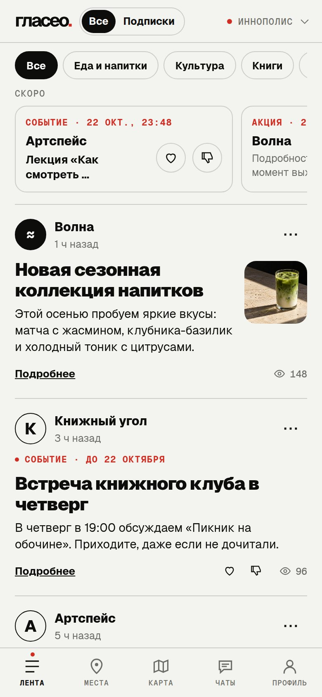
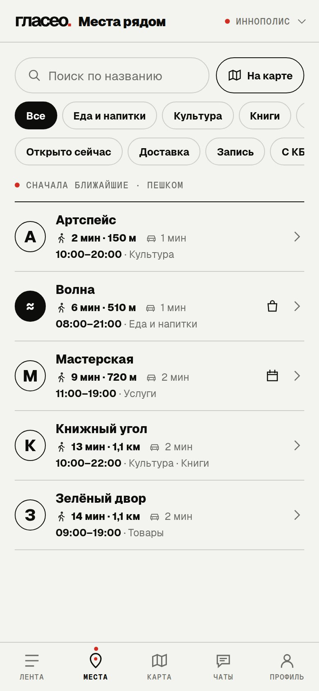
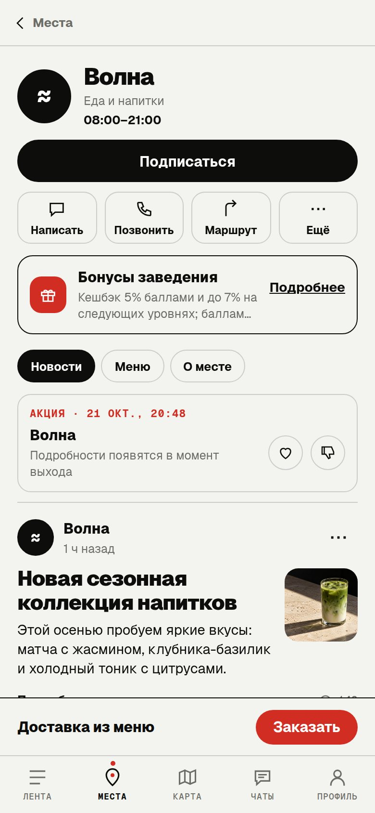
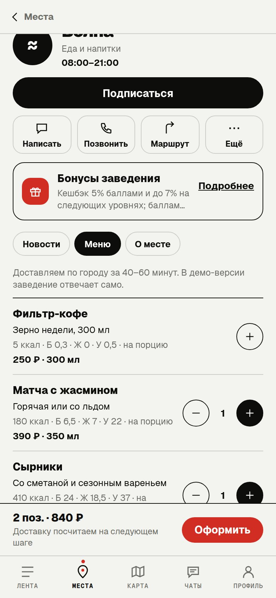
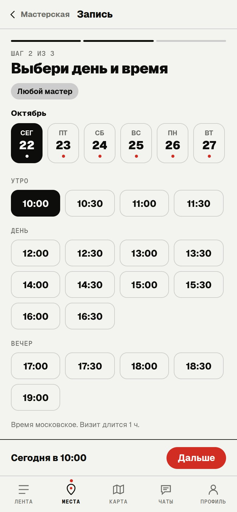
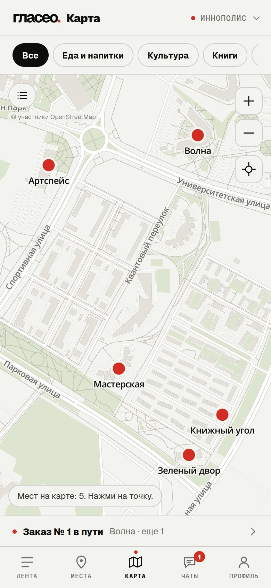
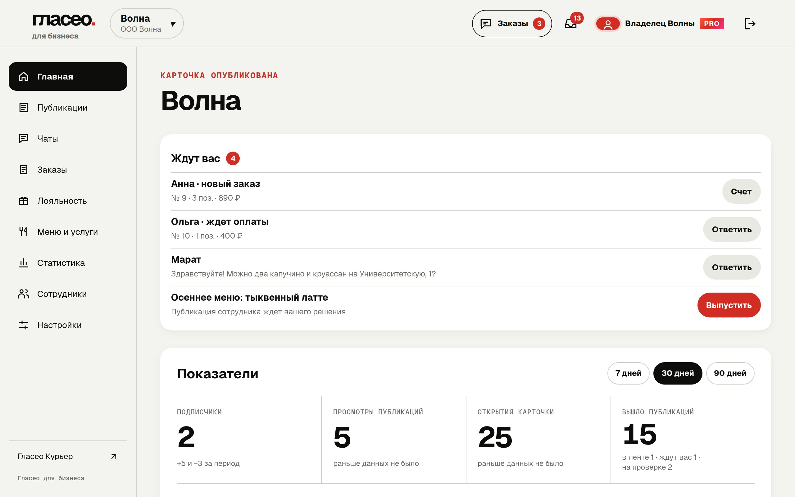
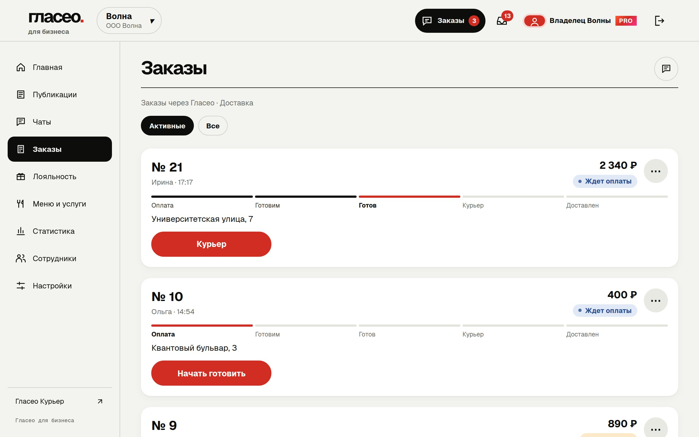
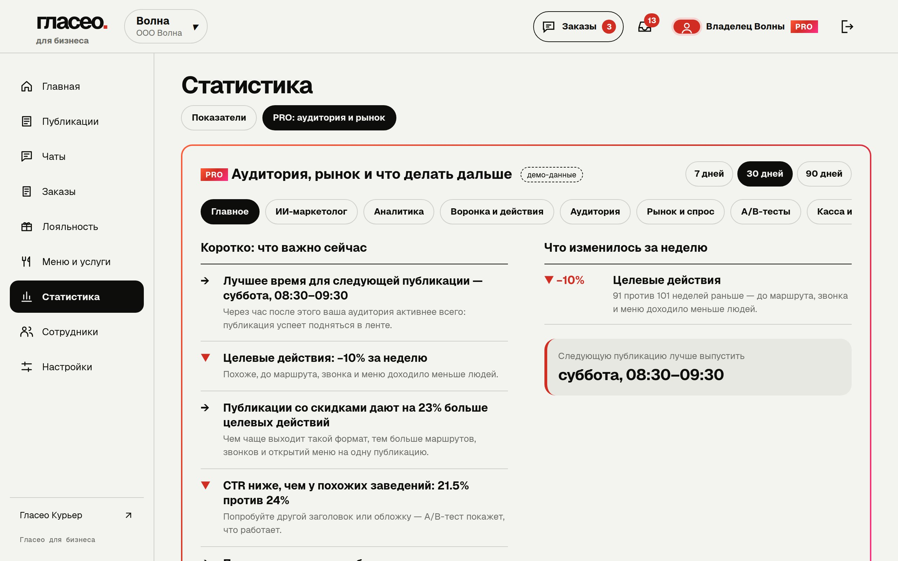

Найти место
Каталог и карта подскажут, что рядом.
Места, события и предложения твоего города в одной ленте. Находи новое и оставайся на связи с теми, кого выбираешь сам.
Посмотреть, что внутриГотовимся к запуску в Иннополисе. Для жителей бесплатно.
Новости мест, события и предложения рядом. Собери свой город в одной ленте.
Каталог и карта подскажут, что рядом.
Встречи, выставки и другие поводы выйти.
Подпишись на место и следи за его новостями.
Места и события выбираешь ты. Платного приоритета в ленте нет.
Лента города, места рядом с расстоянием пешком и своя карта.
Меню с КБЖУ, доставка до двери, запись к мастеру — оплата месту напрямую.
Подписки, чат с местом и карта гостя с бонусами — всё в профиле.
Пример приложения. Места, цены и люди выдуманы
Узнал о месте — и сразу можно заказать, записаться или прийти с бонусами. Всё в одном приложении.
Собери заказ в карточке места и следи за ним в чате. Платишь заведению напрямую — без наценки сервиса.
Мастер, день и время — в три шага. Если место попросит перенести визит, без твоего согласия ничего не изменится.
Карта гостя в профиле: баллы, штампы и скидки разных мест. Покажи код на кассе — пластик не нужен.
Вес порции и КБЖУ у блюд, фильтр «С КБЖУ» в списке мест.
Места по расстоянию пешком, фильтр «Открыто сейчас» и своя карта города с маршрутом.
Приходят, когда место из подписок выпускает новость или анонс. Для любого места их можно выключить, не отписываясь.
Найти место, узнать о нём, заказать или записаться — и прийти.






Экраны демо-версии гласео. Заведения и публикации — примеры.
гласео готовится к запуску. Для Android планируем выпуск в RuStore, для iPhone — веб-приложение в браузере. Ссылки появятся здесь, когда можно будет присоединиться.
Да. Для жителей приложение будет бесплатным. Ты сам выбираешь места и подписки, а бизнес не может купить приоритет в ленте.
Да, если место это предлагает. Заказ собирается из меню, а оплачиваешь его заведению напрямую — по ссылке, QR или при получении. Для записи выбери мастера, день и время.
Начинаем с Иннополиса. Позже планируем подключать другие города.
У всех мест одни правила: лента идёт по времени, место в ней не купить. гласео даёт прямой канал к людям, которым вы интересны, — и всё, чтобы интерес стал визитом.
с заказов и записей. Гость платит вам напрямую — вашей ссылкой, QR или на месте.
кабинет на компьютере и телефоне — для владельца и всей команды.
каждая ваша публикация приходит подписчикам уведомлением.
Фото, меню с ценами, вес и КБЖУ, часы работы и точка на карте города. Вас находят в каталоге, на карте и по фильтрам «Открыто сейчас», «Доставка», «Запись».
Публикация выходит в общей ленте города и у подписчиков. Запланируйте выход заранее — анонс появится в блоке «Скоро».
Житель собирает заказ из вашего меню, вы ведёте его по шагам до двери. Для своих курьеров есть приложение «Гласео Курьер».
Услуги, мастера и их расписание. Гость сам выбирает свободное время — запись сразу у вас и у мастера в «Моих записях».
Вопросы, уточнения по заказу и записи — в одном окне кабинета. Личный номер раздавать не нужно.
Баллы с уровнями, штампы, скидки, «N + M», подарки и промокоды. Гость показывает QR из приложения — вы сканируете его камерой телефона.
Подписчики, просмотры, переходы в карточку, звонки и маршруты. В PRO — ИИ-маркетолог: когда публиковать и что работает лучше. Часть отчётов PRO пока на демо-данных.
Администратор, модератор, оператор заказов, мастер — каждый видит своё. Публикации сотрудников выходят с вашего решения.
Всё как в настоящем кабинете: выставьте счёт и ответьте гостю, проведите заказ до двери, начислите баллы по карте гостя, загляните в PRO. Кофейня и цифры выдуманы.
Пример кабинета. Заведение, гости, заказы и цифры выдуманы.
Снимки рабочего кабинета с тестовыми данными. Он открывается в браузере — ничего устанавливать не нужно.



Снимки с тестового стенда гласео. Имена и заказы — примеры; отчёт PRO построен на демо-данных.
Название, адрес, точка на карте и рабочий контакт — несколько минут.
Команда гласео убеждается, что заявку подал представитель заведения. Если чего-то не хватит — попросим уточнить.
Вы получаете вход в кабинет, заполняете карточку, добавляете сотрудников — и выходите в ленту города.
Заведения и сервисы Иннополиса: кафе, магазины, мастерские, салоны, студии. Перед подключением проверяем данные организации и полномочия её представителя.
Нет. Гость платит вам напрямую — по вашей ссылке, QR или при получении. Деньги не проходят через гласео.
Жители города в общей ленте и подписчики заведения — в своей, с уведомлением. Каждую публикацию перед выходом читает команда гласео.
Нет. Карточка, меню, заказы, запись и лояльность работают внутри гласео, а кабинет открывается в браузере на компьютере и телефоне.
Нет. Ни тариф, ни дополнительные инструменты не дают приоритета в ленте. Внимание нельзя купить — его можно только заслужить. Люди сами решают, кого выбрать.
Первый город — Иннополис.
Для жителей — бесплатно.
Готовим приём заявок.
Первый город — Иннополис.